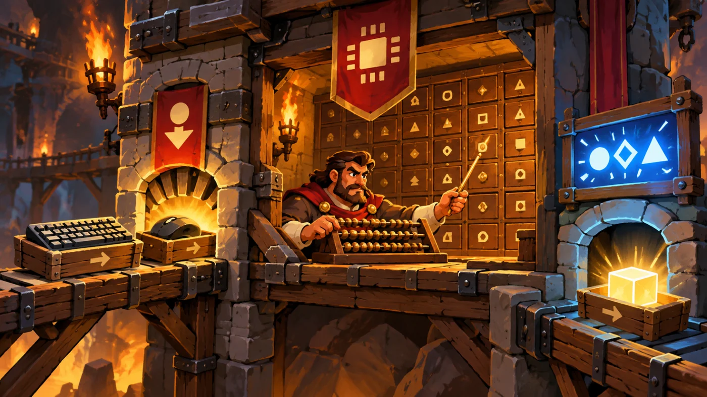
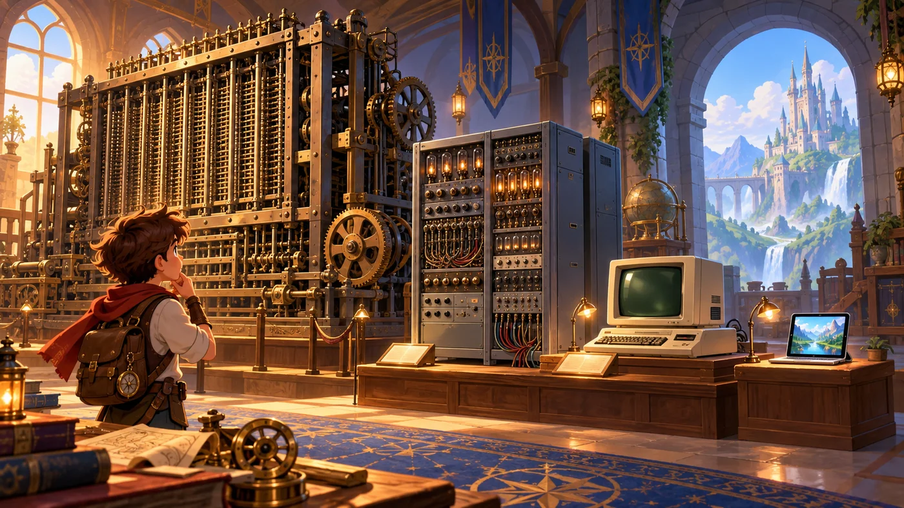
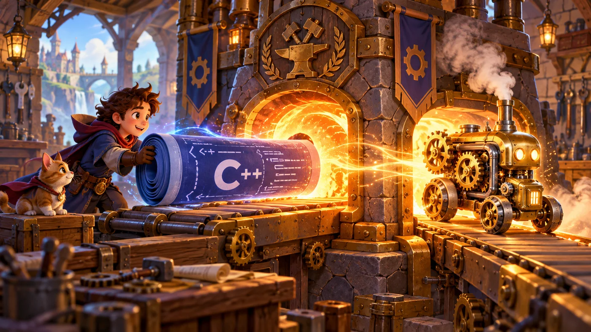

故事：地牢的石门在身后合拢，你在黑暗中醒来。走廊尽头有一抹湛蓝的光——
那是宝石，也是你还活着的证据。墙上的幽蓝尖刺正等着你踩错一步。
安雅的声音从记忆里传来：在这里，活下去靠的不是蛮力，而是清晰的指令。
扣哒考级 · GESP C++ 一级 · 第 1 单元 | 烛火岗哨 CANDLEWATCH OUTPOST
哨火初燃 计算机基础与开发环境
Computer Basics & IDE

安雅
红发队长 · 你的向导
走出暗影地牢的第二天，你跟着安雅爬上了一道缓坡。坡顶立着一座砂岩哨塔，
塔尖上燃着一簇青蓝色的火——那是永不熄灭的哨火，也是这一带所有旅人的方向。
这里是烛火岗哨。安雅把一张通行证拍在你肩上，从今天起，你是守夜人。 不过在点灯之前，得先弄明白一件事——你到底在用什么在写代码？
这里是烛火岗哨。安雅把一张通行证拍在你肩上，从今天起，你是守夜人。 不过在点灯之前，得先弄明白一件事——你到底在用什么在写代码？
安雅 · 红发队长
别急着敲代码。这一单元我们把"C++ 这套家伙"从头捋一遍——你的机器由什么组成、它是怎么发展来的、程序到底是什么、
以及C++ 的代码要经过哪几道工序，才能变成真正跑起来的东西。
这些看着像常识，但考试第一题就爱考它们。

assets/illustrations/py-L1-01-01_outpost_arrival.webp
【配图位】黄昏的烛火岗哨：砂岩哨塔塔尖燃着青蓝色永恒的火焰；红发独眼女队长安雅在门口向新兵招手，新兵怀里抱着一卷图纸；塔墙外的木窗透出暖色的灯光，屋里能看到一张摆着卷轴的写字台。
0 单元导语与目标
Unit Overview
0.1 学习目标
1学完这个单元，你将能……
- 说出计算机的五大组成部件，分清输入设备与输出设备
- 讲清计算机发展的四个时代，以及划分时代的依据
- 说明"程序""指令""编程语言"分别是什么
- 说出机器语言、汇编语言、高级语言的区别
- 讲清 C++ 从源代码到可执行文件的三道工序
- 在开发环境里写出并运行你的第一个 C++ 程序
2对标 GESP 考纲（C++ 一级）
- （1）了解操作系统的基本概念及常见操作，了解计算机硬件的基本组成结构
- （2）了解计算机网络协议和互联网的基本概念
- （3）了解计算机语言的基本概念与转换，掌握编程文件的创建、复制、粘贴、删除、移动和调试
- （4）掌握 C++ 开发环境的使用：编辑、编译、运行、调试
- 考核目标：对开发环境有清晰认识，能独立写出并运行一个完整的 C++ 程序
0.2 考纲对照
这一单元是整套 C++ 一级的起点，它不讲复杂语法，只讲"环境与常识"。 但别小看它——在 C++ 一级真题里，单选题的第 1、2 题几乎都在这个范围内出题。
| 本单元小节 | 对应考纲条目 | 真题常考形式 |
|---|---|---|
| 1 计算机组成 | 硬件的基本组成结构 | 判断某设备是输入还是输出设备 |
| 2 发展历程 | 计算机的历史 | 四个时代的划分依据 |
| 3 程序与语言 | 计算机语言的基本概念 | 机器语言 / 汇编 / 高级语言的区别 |
| 4 开发环境 | IDE 的使用、编译流程 | IDE 能做什么、不能做什么；源代码→可执行文件 |
零基础提示：如果你完全没接触过 C++ 也没关系。这一单元的内容不需要你写复杂代码，
只需要"看懂、记住、能分辨"。真正开始敲代码是从第 2 单元起。
1 计算机长什么样
What Makes Up a Computer
1.1 五大部件
岗哨的机械师把一台老式"运算机"拆给你看。他说：别看它复杂，拆开来只有五样东西。
图 2（SVG）：计算机的五大部件与数据流向

assets/illustrations/cpp-L1-01-02_computer_parts_scene.webp
【配图位】把计算机画成一座小驿站：正门是"收货口"，键盘与鼠标像两只手把东西递进去；屋里一位账房先生左手拨算盘、右手举指挥棒（CPU）；墙边一排带编号的储物柜（存储器）；后门一个"发货口"，屏幕上亮着结果告示牌。整体为扣哒世界卡通风格，暖色火光。
用"小驿站"记牢五大部件：
计算机就像一座驿站，里面只有四个角色在干活——
① 门口的收货员，把外面的东西接进来（输入设备）
② 屋里的账房先生，负责算数、也负责指挥别人（CPU）
③ 墙边的储物柜，专门替大家存东西（存储器）
④ 后门的发货员，把结果送出去（输出设备）
以后遇到"这个部件是干什么的"，先想它是四个角色里的哪一个。
计算机就像一座驿站，里面只有四个角色在干活——
① 门口的收货员，把外面的东西接进来（输入设备）
② 屋里的账房先生，负责算数、也负责指挥别人（CPU）
③ 墙边的储物柜，专门替大家存东西（存储器）
④ 后门的发货员，把结果送出去（输出设备）
以后遇到"这个部件是干什么的"，先想它是四个角色里的哪一个。
| 部件 | 作用 | 常见例子 |
|---|---|---|
| 输入设备 | 把外面的信息送进计算机 | 键盘、鼠标、扫描仪、摄像头、麦克风、触摸屏、传感器 |
| 运算器 | 做算术运算和逻辑运算 | 与控制器一起封装在 CPU 里 |
| 控制器 | 指挥各个部件按顺序工作 | 从内存取指令、解释指令、发出控制信号 |
| 存储器 | 保存数据与程序 | 内存（断电即失）、硬盘 / U 盘（长期保存） |
| 输出设备 | 把结果送出计算机 | 显示器、打印机、音箱、投影仪 |
和你自己比一比：
你的眼睛、耳朵、鼻子把外面的信息收进来——它们就像计算机的输入设备；
你的嘴和手把想法表达出去——它们就像计算机的输出设备；
你的大脑负责算和指挥、还记住很多事——它既是 CPU，也是存储器。
一台计算机，其实就是在照着人的样子工作。
你的嘴和手把想法表达出去——它们就像计算机的输出设备；
你的大脑负责算和指挥、还记住很多事——它既是 CPU，也是存储器。
一台计算机，其实就是在照着人的样子工作。
一句话分清输入输出：
信息"进来"的是输入设备，信息"出去"的是输出设备，只负责"装东西"的是存储设备。
· 键盘、鼠标、摄像头 → 输入
· 显示器、打印机、音箱 → 输出
· 硬盘、U 盘、内存条 → 存储（不算纯粹的输出设备）
· 键盘、鼠标、摄像头 → 输入
· 显示器、打印机、音箱 → 输出
· 硬盘、U 盘、内存条 → 存储（不算纯粹的输出设备）
1.2 硬件与软件
机械师把零件装回去，拍了拍机器："这些你能摸到的，叫硬件。可光有硬件，它什么也不会做。"
| 分类 | 含义 | 例子 |
|---|---|---|
| 硬件 | 看得见、摸得着的物理设备 | CPU、内存条、硬盘、主板、显示器、键盘 |
| 系统软件 | 管理和调度整台机器的基础软件 | Windows、Linux、macOS、Android、iOS；C++ 编译器 |
| 应用软件 | 为解决具体问题而编写的软件 | 浏览器、聊天软件、画图工具、你写的 C++ 程序 |
编译器属于哪一类？
编译器是系统软件——它是编程的工具，不是为某一件具体事务服务的。
这一点常被考到：编译器、操作系统都属于系统软件。
这一点常被考到：编译器、操作系统都属于系统软件。
1.3 操作系统与常用操作
操作系统是硬件和软件之间的"大管家"。你在电脑上做的每一件小事，背后都是它在调度。
| 操作 | 做什么 | 注意点 |
|---|---|---|
| 新建 | 新建文件或文件夹 | C++ 源文件一般命名成 main.cpp |
| 复制 / 粘贴 | 生成一份副本 | 原文件仍在；新文件可改名 |
| 移动 | 换一个位置 | 移动后原位置就没有了 |
| 重命名 | 改名字 | C++ 源文件的扩展名必须是 .cpp |
| 删除 | 送到回收站 | 重要文件删之前先确认 |
打个比方：
操作系统就像驿站的总管。他不亲自搬箱子，但"谁搬、什么时候搬、搬到哪个屋"全由他安排。
你双击一个图标、打开一份文件、按下保存——看起来是你在动手，其实都是总管在背后调度。
所以没有操作系统，硬件再多也只是一堆零件。
你双击一个图标、打开一份文件、按下保存——看起来是你在动手，其实都是总管在背后调度。
所以没有操作系统，硬件再多也只是一堆零件。
扩展名很重要：
记事本存出来的文件如果叫
C++ 源文件必须以
main.cpp.txt，编译器就不认它。C++ 源文件必须以
.cpp 结尾（旧标准也有 .cc、.cxx）。
2 计算机的四代
Four Generations
2.1 四个时代
| 时代 | 年代 | 核心元器件 | 特点 |
|---|---|---|---|
| 第一代 | 1946—1958 | 电子管 | 体积巨大、耗电惊人、速度慢 |
| 第二代 | 1958—1964 | 晶体管 | 体积变小、可靠性提高 |
| 第三代 | 1965—1970 | 中小规模集成电路 | 一块硅片上集成许多元件 |
| 第四代 | 1971 年至今 | 大规模、超大规模集成电路 | 微型计算机普及，性能飞速提升 |
2.2 划分依据
四个时代的名字听起来很抽象，其实只要盯住一件事：做机器的"材料"越来越厉害了。

assets/illustrations/cpp-L1-01-03_generations.webp
【配图位】从左到右排列四台计算机：最左边是一台占满整间屋子的巨型电子管机器，接着是一台只有两个柜子大的晶体管机器，然后是一张桌子大小的集成电路机器，最右边是一台可以放在掌心的小电脑；每台机器上方标着一个小小的零件图标，依次是玻璃管、小石子状三极管、薄片、更小的薄片，形成明显的缩小趋势。
打个比方：
最早的计算器用玻璃管当零件——又大又烫，一台机器能占满一整间屋子；
后来换成小石子一样的三极管，机器立刻小了一圈；
再后来人们把成百上千个小零件刻在一张薄片上，机器就变成桌上放得下的了。
变的始终只有一样东西：用什么材料做零件——这就是"核心元器件"。
后来换成小石子一样的三极管，机器立刻小了一圈；
再后来人们把成百上千个小零件刻在一张薄片上，机器就变成桌上放得下的了。
变的始终只有一样东西：用什么材料做零件——这就是"核心元器件"。
图 5（SVG）：四代计算机与它们各自的核心元器件
记住这一条就够了：
划分四个时代的主要依据是"核心元器件"。
速度变快、容量变大、体积变小，都是换了元器件之后顺带产生的结果。
考试喜欢把"结果"当选项来迷惑你，认准"元器件"三个字就不会错。
速度变快、容量变大、体积变小，都是换了元器件之后顺带产生的结果。
考试喜欢把"结果"当选项来迷惑你，认准"元器件"三个字就不会错。
3 什么是程序
Program & Language
3.1 程序与指令
机械师从抽屉里翻出一叠打孔卡片："一张卡片就是一条指令，一叠按顺序排好的卡片，就是一个程序。"
打个比方：
程序就像一本写给机器人看的菜谱。
菜谱里的"先放油""再放盐"各是一行——那是指令；
整本按顺序写好的菜谱——那是程序；
你坐下来写这本菜谱的过程——那就是编程。
菜谱的顺序千万不能乱：先放盐再放油，菜就做坏了。
菜谱里的"先放油""再放盐"各是一行——那是指令；
整本按顺序写好的菜谱——那是程序；
你坐下来写这本菜谱的过程——那就是编程。
菜谱的顺序千万不能乱：先放盐再放油，菜就做坏了。
| 名词 | 含义 |
|---|---|
| 指令 | 让计算机做一件事的一条命令，比如"加两个数""移动到某处" |
| 程序 | 为解决某个问题而按一定顺序组织起来的指令集合 |
| 编程 | 把解决问题的步骤，用计算机能懂的方式写下来的过程 |
| 编程语言 | 人与计算机交流、描述"怎么做"的规则与符号体系 |
3.2 编程语言的三个层次
图 6（SVG）：机器语言、汇编语言、高级语言
三句话记牢：
机器语言：只有 0 和 1，计算机能直接执行，但人几乎看不懂。
汇编语言：用
高级语言：接近自然语言与数学式子，可读性好、可移植，但必须经过翻译（编译或解释）才能执行。
机器语言：只有 0 和 1，计算机能直接执行，但人几乎看不懂。
汇编语言：用
MOV、ADD 这样的助记符，比机器语言好读，仍依赖具体机器。高级语言：接近自然语言与数学式子，可读性好、可移植，但必须经过翻译（编译或解释）才能执行。
3.3 为什么从 C++ 学起
安雅在火堆边坐下："哨塔的每一盏灯，都要靠精确的指令才能点亮。C++ 就是这样一门'精确'的语言。"
| 特点 | 对学习者的意义 |
|---|---|
| 编译型语言 | 写完要经过"编译"才能运行，能清楚看到整个流程 |
| 贴近底层 | 要显式声明变量的类型，帮你建立"数据是有类型的"这条意识 |
| 语法严谨 | 少一个分号就编译不过，逼你养成严谨的习惯 |
| 效率高 | 程序运行速度快，是各级竞赛与考级的常用语言 |
4 C++ 开发环境
From Source to Program
4.1 从源代码到可执行文件
这是 C++ 与许多语言最大的不同：你写的代码不能直接运行，必须先"编译"。
图 7（SVG）：源代码 → 编译 → 可执行文件 → 运行

assets/illustrations/cpp-L1-01-04_compile_furnace.webp
【配图位】驿站作坊里的一座大熔炉：一名新兵把写满符号的图纸卷轴投进炉口，炉身透明部分能看到图纸被拆解成发光的小零件，出料口吐出一副咬合完好的青铜齿轮，齿轮上刻着可执行文件的标记；炉边有一块警示牌写着"编译"。整体为扣哒世界卡通风格，炉火橙红与齿轮青铜色形成对比。
打个比方：
你写的
编译器是作坊里的熔炉，把图纸投进去，炼出一副能直接转起来的齿轮（可执行文件）；
最后你按下"运行"，齿轮就转起来了。
图纸炼不成齿轮，就是"编译失败"；齿轮不转，就说明程序没跑起来。
main.cpp 就是一张图纸——图纸画得再好，它自己不会动；编译器是作坊里的熔炉，把图纸投进去，炼出一副能直接转起来的齿轮（可执行文件）；
最后你按下"运行"，齿轮就转起来了。
图纸炼不成齿轮，就是"编译失败"；齿轮不转，就说明程序没跑起来。
一定要记住：
C++ 是编译型语言，必须"编译成功"才能运行。
如果编译报错，程序根本不会运行——这时候屏幕上不会有任何输出，先去读错误信息。
如果编译报错，程序根本不会运行——这时候屏幕上不会有任何输出，先去读错误信息。
4.2 第一个 C++ 程序
main.cpp —— 每个 C++ 程序都从这里开始
C++
#include <iostream>
using namespace std;
int main() {
cout << "哨火不熄" << endl;
cout << "守夜不止" << endl;
return 0;
}OUTPUT 哨火不熄
守夜不止
守夜不止
| 这一行/这一段 | 作用 | 能不能省 |
|---|---|---|
#include <iostream> | 引入输入输出功能，才能用 cout | 不能省 |
using namespace std; | 使用标准命名空间，省去写 std:: | 可以省，但要写 std::cout |
int main() { } | 主函数，程序从这里开始执行 | 不能省，且有且只有一个 |
cout << "..." | 把内容输出到屏幕 | 按需要写 |
endl | 换行，并把缓冲区的内容立刻送出去 | 可换成 "
" |
return 0; | 告诉操作系统"程序正常结束" | 主函数里可以省，但建议写 |
4.3 保存、编译与运行
| 步骤 | 做什么 | 常见问题 |
|---|---|---|
| 新建 | 新建源文件，保存为 main.cpp | 存成 .txt 编译器不认 |
| 编辑 | 写代码，注意英文半角符号 | 中文标点是新手第一大坑 |
| 保存 | Ctrl + S | 没保存就编译，编译的是旧代码 |
| 编译 | 点"编译"或按 F9 一类的快捷键 | 报错就按提示的行号修改 |
| 运行 | 点"运行"查看结果 | 结果一闪而过是正常的，可加输入语句停留 |
| 调试 | 用断点或输出中间变量找错 | 详见第 7 单元 |
IDE 能做什么、不能做什么？
能做：编辑代码、语法高亮、自动补全、检查语法错误、编译、运行、调试。
不能做：直接控制硬件（比如让机器人的电机转起来）—— 硬件要靠程序运行时发出的指令去驱动，IDE 本身绕不过程序。
这一条是真题原题，务必分清。
不能做：直接控制硬件（比如让机器人的电机转起来）—— 硬件要靠程序运行时发出的指令去驱动，IDE 本身绕不过程序。
这一条是真题原题，务必分清。
5 代码实战
Level Practice
关卡
英雄觉醒
进入关卡 →思路：路线很短——先右移一步，再下移一步，再右移一步，
正好绕开尖刺拿到宝石。在 C++ 里，每一步都是一条写在 main() 里的语句。

assets/stages/py-L1-01-stage1_hero_awaken.webp
【配图位】游戏实机截图：地牢走廊内，英雄刚绕过幽蓝尖刺、捡起走廊尽头的湛蓝宝石；屏幕下方代码区显示三行移动指令，右上角显示"关卡完成"提示。
重点示例：让英雄走出第一步
C++
#include <iostream>
using namespace std;
int main() {
// 每一步都要以分号结尾
hero.moveRight(); // 向右移动一格
hero.moveDown(); // 向下移动一格
hero.moveRight(); // 再向右移动一格，去拿宝石
return 0;
}要点
hero.moveRight() 是一次"方法调用"；每句结尾的 ; 千万别丢
和本单元的关联：
你刚才做的三件事，正好对应本单元讲的三道工序：
在编辑区写下这几行（① 编辑）→ 点编译，检查有没有语法错误（② 编译）→ 点运行，看英雄真的动起来（③ 运行）。
以后每一关，都是重复这三步。熟悉了它们，你就掌握了 C++ 的基本节奏。
去扣哒世界闯这一关 →
在编辑区写下这几行（① 编辑）→ 点编译，检查有没有语法错误（② 编译）→ 点运行，看英雄真的动起来（③ 运行）。
以后每一关，都是重复这三步。熟悉了它们，你就掌握了 C++ 的基本节奏。
6 常见陷阱
Common Pitfalls

扣哒鸭 · 调试官
第一单元看着都是常识，但常识题最容易丢分。四条，条条都是真题爱考的地方。
1
把"存储设备"当成输入或输出设备。

扣哒鸭：硬盘、U 盘、内存条——它们是既存又取的存储设备，
不能简单归到"输入"或"输出"里。考到"全部属于输入设备的一组"时，看到存储设备就排除。
不能简单归到"输入"或"输出"里。考到"全部属于输入设备的一组"时，看到存储设备就排除。
正确认识：输入 / 输出 / 存储，三类别混着记
2
以为"速度变快"是划分计算机时代的依据。

扣哒鸭：速度和容量都是换元器件之后的结果。
依据只有一条：核心元器件。电子管 → 晶体管 → 中小规模集成电路 → 大规模集成电路。
依据只有一条：核心元器件。电子管 → 晶体管 → 中小规模集成电路 → 大规模集成电路。
正确认识：核心元器件是依据
3
以为 IDE 能直接控制硬件。

扣哒鸭：IDE 管的是"写代码、查错、编译、运行"。
真正让电机转起来的是程序运行时发出的指令，IDE 不能绕过程序直接驱动硬件。
真正让电机转起来的是程序运行时发出的指令，IDE 不能绕过程序直接驱动硬件。
正确认识：IDE 不直接控制硬件
4
用中文标点写代码，或者漏掉分号。

扣哒鸭：中文的
C++ 的所有语法符号都必须是英文半角； 另外每条语句末尾的分号
；、”、（） 编译器完全不认。C++ 的所有语法符号都必须是英文半角； 另外每条语句末尾的分号
; 是 C++ 的硬规定，不是可选项。正确做法：输入法切英文；每句写完先补分号
7 题目练习
Practice
前 2 题改编自 C++ 一级真题，其余为原创练习题。
改编自 2026 年 9 月 · C++ 一级 · 第 1 题单选题
烛火岗哨的巡逻队由控制程序统一调度。工程师们使用集成开发环境（IDE）编写并调试巡逻程序。
下列关于 IDE 功能的描述，错误的是（ ）。
A.可以提供代码自动补全，提高编程效率
B.可以提供辅助信息，帮助排查程序逻辑错误
C.可以直接控制巡逻机器人的电机转动
D.支持语法高亮，使代码更易阅读
B.可以提供辅助信息，帮助排查程序逻辑错误
C.可以直接控制巡逻机器人的电机转动
D.支持语法高亮，使代码更易阅读
查看答案与详解
答案：C。IDE 负责代码的编写、检查、编译与调试，
它不会绕过程序直接驱动硬件；让电机转起来的是程序运行时发出的指令。
A、B、D 都是 IDE 的正常功能。
对应小节4.3 保存、编译与运行。
A、B、D 都是 IDE 的正常功能。
对应小节4.3 保存、编译与运行。
改编自 2026 年 9 月 · C++ 一级 · 第 2 题单选题
岗哨档案室里记载：计算机自问世以来经历了四个时代——电子管计算机（1946—1958 年）、
晶体管计算机（1958—1964 年）、中小规模集成电路计算机（1965—1970 年）以及大规模和超大规模集成电路计算机（1971 年至今）。
划分这四个时代所采用的主要依据是（ ）。
A.运算速度 B.存储容量 C.体积大小 D.核心元器件
查看答案与详解
答案：D。四个时代分别对应电子管、晶体管、中小规模集成电路、大规模集成电路——
本质是构成计算机的核心元器件变了。
速度、容量、体积都是随之而来的结果，不是划分依据。
对应小节2.2 划分依据。
速度、容量、体积都是随之而来的结果，不是划分依据。
对应小节2.2 划分依据。
改编自 2026 年 6 月 · C++ 一级 · 第 1 题单选题
在智能温室中，湿度传感器持续检测土壤湿度，并把数据实时发送给中央控制器，
控制器据此判断是否开启灌溉系统。这里的湿度传感器所发挥的作用，
类似于计算机系统中的哪一类组件？（ ）
A.处理器 B.存储器 C.输入设备 D.输出设备
查看答案与详解
答案：C。传感器把外界的物理量（湿度）变成计算机能处理的数据送进去，
这正是输入设备的职责。
对照记忆：处理器负责算与指挥，存储器负责记，输出设备负责把结果送出去。
对应小节1.1 五大部件。
对照记忆：处理器负责算与指挥，存储器负责记，输出设备负责把结果送出去。
对应小节1.1 五大部件。
原创练习题单选题
岗哨的机械师在整理设备清单。下列设备中，全部属于输入设备的一组是（ ）。
A.键盘、鼠标、扫描仪
B.显示器、打印机、音箱
C.硬盘、U 盘、内存条
D.摄像头、投影仪、键盘
B.显示器、打印机、音箱
C.硬盘、U 盘、内存条
D.摄像头、投影仪、键盘
查看答案与详解
答案：A。
B 项全部是输出设备；
C 项是存储设备，既不是纯粹的输入也不是输出；
D 项里"投影仪"是输出设备，混进来就不成立了。
小技巧：问一句"信息是进来还是出去"——进来的是输入，出去的是输出，装东西的是存储。
对应小节1.1 五大部件。
B 项全部是输出设备；
C 项是存储设备，既不是纯粹的输入也不是输出；
D 项里"投影仪"是输出设备，混进来就不成立了。
小技巧：问一句"信息是进来还是出去"——进来的是输入，出去的是输出，装东西的是存储。
对应小节1.1 五大部件。
原创练习题判断题
C++ 属于高级语言，它写出来的程序计算机不能直接执行，必须先经过编译，生成可执行文件后才能运行。（ ）
查看答案与详解
答案：正确（√）。计算机能直接执行的只有机器语言（0 和 1）。
C++ 是高级语言、也是编译型语言：源代码
对应小节3.2 编程语言的三个层次；4.1 从源代码到可执行文件。
C++ 是高级语言、也是编译型语言：源代码
main.cpp 要经过编译器翻译，
生成可执行文件（如 main.exe）才能运行。对应小节3.2 编程语言的三个层次；4.1 从源代码到可执行文件。
原创练习题单选题
下列关于 C++ 程序结构的说法，正确的是（ ）。
A.一个 C++ 程序可以没有
B.一个 C++ 程序可以有多个
C.一个 C++ 程序必须有且只能有一个
D.
main 函数B.一个 C++ 程序可以有多个
main 函数，程序从第一个开始执行C.一个 C++ 程序必须有且只能有一个
main 函数，程序从它开始执行D.
cout 不需要引入任何头文件就能直接使用
查看答案与详解
答案：C。
D 错：要用
对应小节4.2 第一个 C++ 程序。
main 函数是 C++ 程序的唯一入口，
有且只有一个；没有它程序无法运行，有多个则会报"重复定义"。D 错：要用
cout 必须先 #include <iostream>。对应小节4.2 第一个 C++ 程序。
原创练习题编程题
题目要求：在开发环境中新建一个 C++ 源文件，让它输出两行字——
第一行是
哨火不熄，第二行是 守夜不止。查看参考答案与要点
#include <iostream>
using namespace std;
int main() {
cout << "哨火不熄" << endl;
cout << "守夜不止" << endl;
return 0;
}
要点：
① 输出要用 cout 和流插入运算符 <<，方向别写反；
② 每一条语句末尾必须有分号 ;；
③ endl 表示换行，写成 "
" 效果一样；
④ 所有符号都要用英文半角，标点错了会编译失败。
对应小节4.2 第一个 C++ 程序；4.3 保存、编译与运行。
8 本单元小结
Unit Summary
安雅 · 红发队长
三句话记住这一单元：一、计算机五大部件——输入、运算器、控制器、存储器、输出；运算器与控制器合称 CPU。
二、四个时代的划分依据是核心元器件，不是速度。
三、C++ 是编译型的高级语言——先写源代码，再编译，最后运行。
岗哨的火已经点上了。下一单元，我们让程序真正"记住东西"。
你在岗哨门口学到了什么
- 五大部件——输入设备、运算器、控制器、存储器、输出设备；运算器与控制器合称 CPU。
- 硬件与软件——摸得到的是硬件；系统软件管全局，应用软件办具体事；编译器属于系统软件。
- 操作系统——Windows / Linux / macOS / Android / iOS；文件的新建、复制、移动、删除、改名要熟练。
- 四个时代——电子管 → 晶体管 → 中小规模集成电路 → 大规模集成电路；划分依据是核心元器件。
- 程序与语言——指令组成程序；机器语言 → 汇编语言 → 高级语言；只有机器语言能被直接执行。
- C++ 的三道工序——编辑
main.cpp→ 编译 → 运行可执行文件。 - 程序骨架——
#include <iostream>、using namespace std;、int main() { }、return 0;。 - IDE——编辑、编译、运行、调试都能做，但不能直接控制硬件。